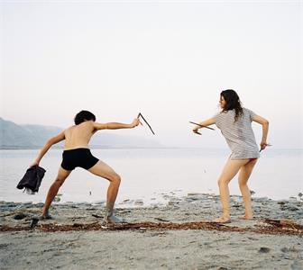
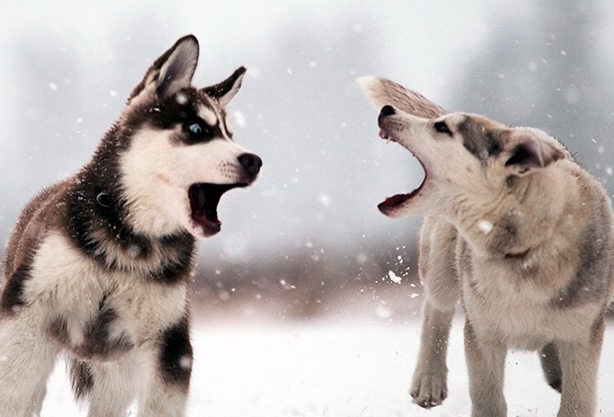

****兼容至ie 10（ie 9 及更早版本不支持 transition 属性。）****
「 hover添加底部托盘效果 」
「 hover边框穿梭效果 」
——不足：两个角落留下1px的痕迹（高宽度0时的边框）——
「 hover扩散标记效果 」
——若需要动画自适应变宽，可a的宽度用padding灵活调整——
「 hover图标搜索框自动弹出效果 」
——存在问题，内部图标遮挡hover导致动画取消——

我在下移噢
在我正在下移的同时，下面的图片也稍微做了下移动动作以让出位置噢。
「 hover元素滑移动画效果 」
——背景图片遮罩，利用降低图片透明度实现——

*****
Im explanation
REad MOre
Im explanation
REad MOre
Hover on the picture
The img will be dim, and explanation show above it.
「 hover显示遮罩特效 」
注意事项： 1、前后必须有相同属性，才会在移入和移出时都有动画效果。 2、若移入移出时，动画效果不完全一致（一般比如有先后顺序的），移入动画的transition放在hover类里，移除动画的transition放在原本的元素里。（因为当shover时，新的transition属性会覆盖原来的。）